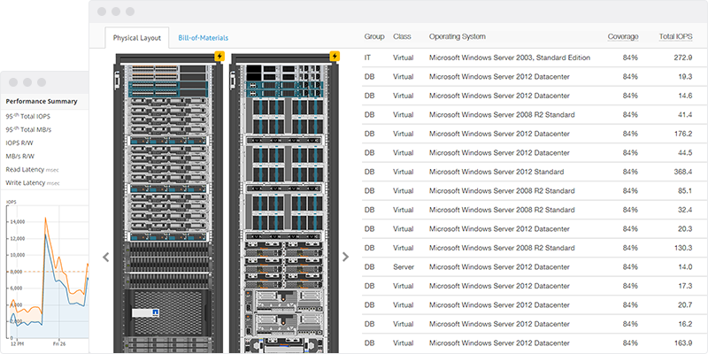

<div class="features pricing netapp">

  <div class="section netapp-tools">
    <div class="inner">
      <div class="columns columns--two">
        <div class="column">
          <i class="icon sso"></i>
          <h3>Go to NetApp Lanamark One</h3>
          <a href="https://lanamark.netapp.com" target="lanamark-one" class="button secondary">SSO Logon</a>
      </div>
        <div class="column">
          <i class="icon community"></i>
          <h3>NetApp Community</h3>
          <a href="https://private-communities.netapp.com/community/netapp_partners_network/netapp_tools/lanamark_one" target="lanamark-one-community" class="button secondary">Visit now</a>
        </div>
      </div>
    </div>
  </div>

  <div class="section key-features feature">
    <div class="inner">
      <div class="wrap">
        <h2>
          Design Automation
        </h2>
        
        <ul>
          <li class="last-line">
            <h3>Storage Design Automation</h3>
            <p>Generate cost-optimized, quotable NetApp FAS, AFF and E-Series storage solutions.</p>
          </li>
          <li class="last-line">
            <h3>FlexPod<sup>&reg;</sup> Design Automation</h3>
            <p>Generate cost-optimized, quotable FlexPod solutions with Cisco and NetApp components.</p>
          </li>
        </ul>
      </div>
    </div>
  </div>

  <div class="section testimonial">
    <div class="inner">
      <div class="wrap">
        <p class="quote">The NetApp Lanamark One platform enables our global systems engineering organization and partners worldwide to simplify sizing, streamline client engagements and design optimized NetApp solutions using real data from client IT environments.</p>
        <span class="customer">John Loiacono, Director of Strategic Programs and Communications at NetApp</span>
      </div>
    </div>
  </div>

  <div class="section key-features feature">
    <div class="inner">
      <div class="wrap">
        <i class="icon infrastructure"></i>
        <h2>
          Workload Assessment
          <small>Sales-oriented data collection, analytics and reporting for IT infrastructure.</small>
        </h2>
        <ul>
          <li>
            <h3>Agent-less</h3>
            <p>Collect inventory and performance metrics without installing agents on target systems.</p>
        </li>
        <li>
          <h3>Data Visualization</h3>
          <p>Analyze resource consumption across individual or groups of machines and storage volumes.</p>
       </li>s
        <li class="last-line">
          <h3>Right-size Solutions</h3>
          <p>Use real workloads to right-size solutions and reduce the risk of misquoting and under- or over-provisioning.</p>
        </li>
        <li class="last-line">
          <h3>Reporting Automation</h3>
          <p>Generate rich client-facing deliverables documenting the workload assessment and justifying capacity requirements.</p>
        </li>
      </ul>
      </div>
    </div>
  </div>

</div>

{% include alliances.html %}
